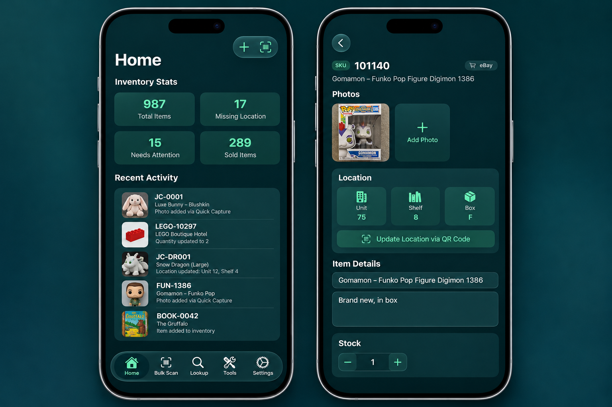

Location tracking
Organise your stock by unit, shelf and box, so you know exactly where to look.
Meet Storli. Keep track of what you own, where you've stored it and the details that matter — without the endless searching.
Designed for iPhone · Preparing for launch

Whether you're managing a collection or keeping stock organised, Storli helps make the everyday details easier.
Organise your stock by unit, shelf and box, so you know exactly where to look.
Add item photos, SKUs, quantities and descriptions to keep useful information together.
Keep a record of item activity and track changes as your inventory evolves.
From your inventory overview to item photos and precise storage locations, everything is designed to be easy to find.
Go beyond the free 200-item allowance with unlimited inventory and supported marketplace features.
Subscription details and availability will be shown in the app.
Storli is getting ready for launch. Questions? We'd love to hear from you.
Contact Storli ↗